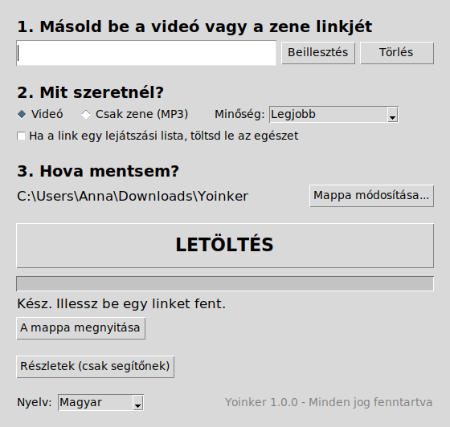
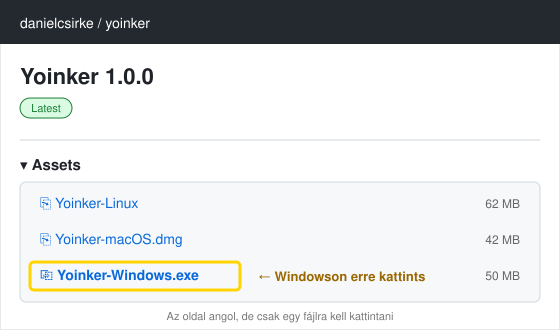
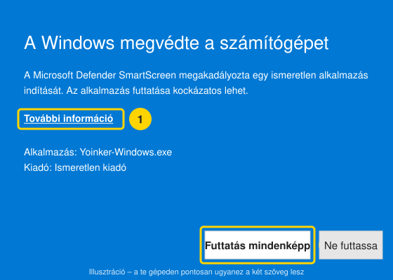
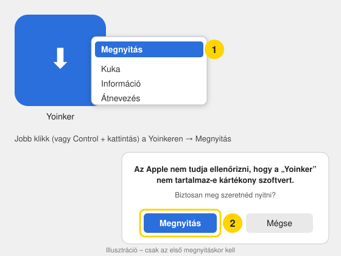
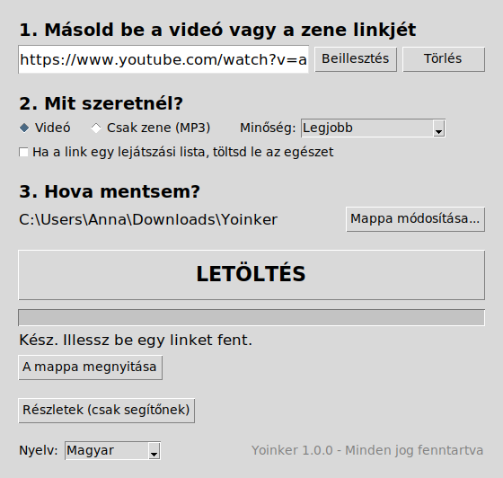
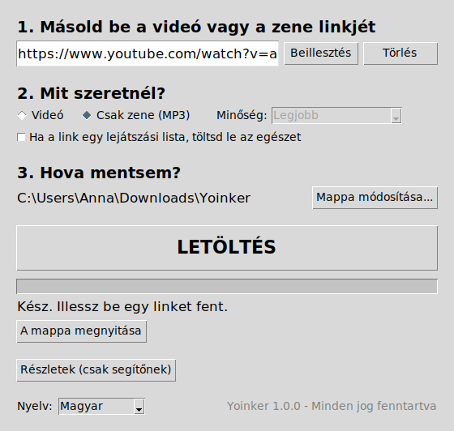
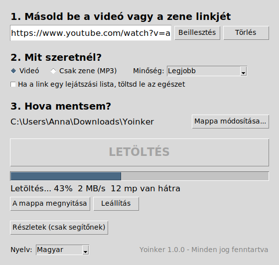
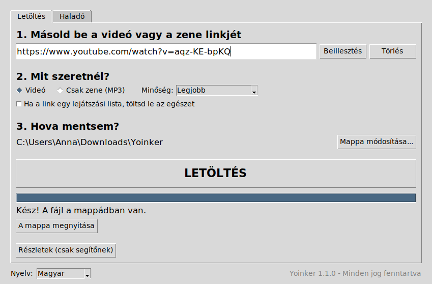
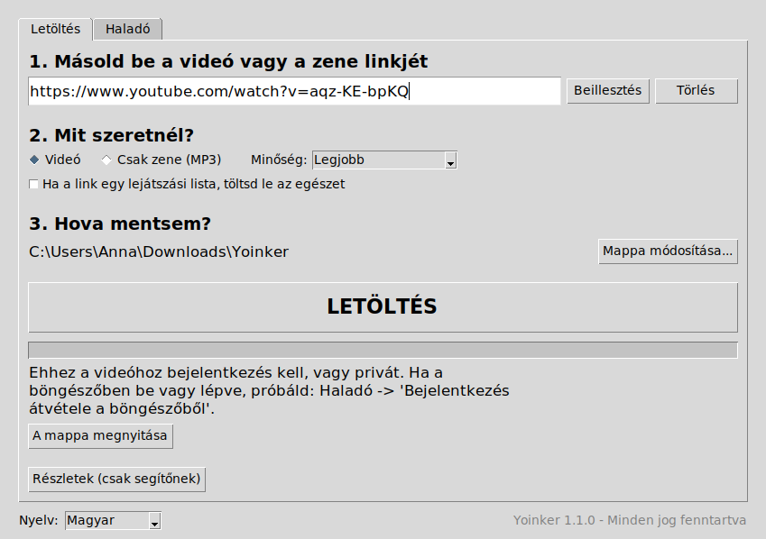
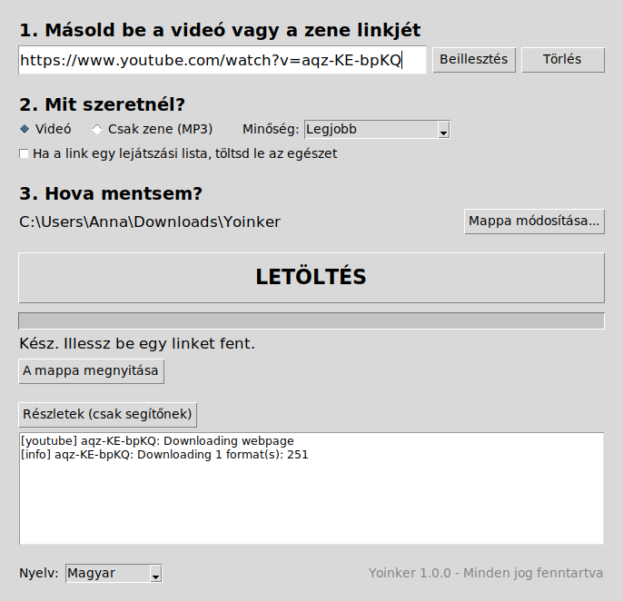

A Yoinker egy kis ingyenes program. Megnyitod, beilleszted egy videó linkjét (például YouTube-ról), és megnyomod a nagy LETÖLTÉS gombot. A videó – vagy ha úgy akarod, csak a zenéje MP3-ban – lekerül a gépedre, a Letöltések mappába.
Nem kell hozzá semmit telepíteni, nem kell fiók, nincs reklám, és nem gépelsz semmilyen parancsot. Magyarul beszél.

Így néz ki. Ennyi az egész program.
🪟 Windows – letöltés és indítás
Kattints a kék Letöltés gombra az oldal tetején. Egy angol nyelvű oldal nyílik meg, ez a program „letöltőhelye”.
Görgess le az Assets szóig, és kattints a Yoinker-Windows.exe fájlra. Pár másodperc alatt letöltődik.

Csak ez az egy sor kell. A többi fájl Macre és Linuxra való.
Nyisd meg a Letöltések mappát, és kattints duplán a Yoinker-Windows.exe fájlra.
Jön egy kék ablak: „A Windows megvédte a számítógépet”. Ez nem hiba – a Windows minden olyan kis programnál kiírja, amit nem a Microsoft áruházából vettél.
Kattints a kis További információ szövegre, utána a Futtatás mindenképp gombra.

1. „További információ”, 2. „Futtatás mindenképp”. Csak az első indításkor kérdezi.
Kész, megnyílt a Yoinker. Nincs telepítő, nincs „tovább-tovább-befejezés”. Tipp Húzd ki a Yoinker-Windows.exe fájlt a Letöltésekből az Asztalra, hogy legközelebb egyből megtaláld.
A vírusirtó törölte a fájlt? Néhány vírusirtó mindenre gyanakszik, ami nem világhírű. Állítsd vissza a karanténból, vagy szólj annak, akitől a Yoinkert kaptad.
Görgess le az Assets szóig, és kattints a Yoinker-macOS.dmg fájlra.
Nyisd meg a letöltött fájlt. Egy kis ablak jelenik meg a Yoinker ikonnal és egy Applications mappával. Húzd rá a Yoinkert az Applications mappára.
Nyisd meg az Applications (Programok) mappát a Finderben, és keresd meg a Yoinkert.
Csak az első alkalommal: ne kattints rá duplán! Tartsd lenyomva a Control billentyűt, és úgy kattints rá (vagy jobb klikk), válaszd a Megnyitást, majd a felugró ablakban megint a Megnyitást.

Ha simán duplán kattintanál, a Mac azt mondaná, hogy „nem nyitható meg”. Ez a trükk megmondja neki, hogy megbízol a programban.
Kész. Ezután már ugyanúgy dupla kattintással indul, mint bármi más.
Azt írja: „A Yoinker sérült, és nem nyitható meg”? Ez az új Macek szokása bizonyos böngészőkkel. Kérj meg valakit, aki ismeri a Terminált, hogy futtassa ezt: xattr -cr /Applications/Yoinker.app – utána megnyílik.
Kattints a kék Letöltés gombra az oldal tetején, és az Assets alatt válaszd a Yoinker-Linux fájlt.
Tedd futtathatóvá: a fájlkezelőben jobb klikk a Yoinker-Linux fájlon → Tulajdonságok → Jogosultságok → pipáld be a „Futtatás programként” (vagy hasonló szövegű) pontot.
Dupla kattintás. Megnyílik a Yoinker.
Ha jobban szereted a terminált: chmod +x Yoinker-Linux && ./Yoinker-Linux
A Yoinker számítógépre készült, telefonon nem fut. Androidra viszont van egy ugyanilyen egyszerű, ingyenes és reklámmentes program, ami belül ugyanazt a motort használja: a Seal. Ezt ajánljuk.
Telepítsd az F-Droid áruházat, ha még nincs: f-droid.org → „Download F-Droid”. Ez egy ingyenes alkalmazásbolt, csak nyílt forráskódú, reklámmentes programok vannak benne. A telefon rá fog kérdezni, hogy engedélyezed-e az „ismeretlen forrásból” telepítést – engedélyezd.
Használat: a YouTube appban a videónál nyomd meg a Megosztás gombot, és válaszd a Sealt. Vagy másold ki a linket, nyisd meg a Sealt, és nyomd meg a letöltés gombot. A videó a Galériában / a Letöltések mappában lesz.
A Seal magyarul is tud, beállításokban választható. Készítője: JunkFood02, nem mi – de ugyanazt a yt-dlp-t használja, mint a Yoinker, tehát ugyanazokról az oldalakról tölt.
iPhone / iPad: az Apple nem enged ilyen programot az áruházába. Használd a Yoinkert egy számítógépen, és onnan másold át a fájlt.
Hogyan töltsek le vele? (30 másodperc)
A böngészőben menj a videóra, amit szeretnél. Kattints egyszer a címsorba a böngésző legtetején (ahol olyasmi van, hogy https://www.youtube.com/watch?v=…). Az egész cím kijelölődik. Másold ki: Ctrl+C (Macen Cmd+C), vagy jobb klikk → Másolás.
A Yoinkerben nyomd meg a „Beillesztés” gombot. A link megjelenik a mezőben.

Válaszd ki, mit kérsz:Videó (mellette a minőség: Legjobb / Jó / Közepes / Kis fájl) vagy Csak zene (MP3). Ha a link egy egész lejátszási lista, és az egészet akarod, pipáld be az alatta lévő négyzetet.

„Csak zene” esetén a minőség-választó elszürkül, mert nincs rá szükség.
Nézd meg, hova menti (3. lépés). Alapból a Letöltések → Yoinker mappába. Ha máshova szeretnéd, „Mappa módosítása…”. Megjegyzi.
Nyomd meg a nagy LETÖLTÉS gombot. A csík töltődik, alatta látod a százalékot, a sebességet és hogy hány másodperc van hátra.

Amikor azt írja: Kész!, nyomd meg A mappa megnyitása gombot. Ott a fájl, a videó címével elnevezve.

Valami nem megy?
A Yoinker nem ír ki rejtélyes hibakódokat: a csík alatt magyarul megmondja, mi a baj. Például:

Ezt írja
Mit csinálj
Az oldal elutasította a letöltést. Szerezd be a legújabb verziót…
A videós oldal változtatott valamit, a nálad lévő Yoinker túl régi. Töltsd le újra a kék gombbal, cseréld le a régit. Ez az esetek 95%-ában megoldja.
Nincs internetkapcsolat, vagy az oldal nem válaszolt.
Nézd meg, megy-e a net a böngészőben. Próbáld újra egy perc múlva.
Ehhez a videóhoz bejelentkezés kell, vagy privát.
Ezt nem lehet letölteni. Akkor sem, ha a böngészőben be vagy jelentkezve.
Ez a link nem támogatott.
Nem egy videó linkjét másoltad, hanem pl. egy csatornáét. Nyisd meg magát a videót, és azt másold.
Ez nem úgy néz ki, mint egy link.
A linkek https://-sel kezdődnek. Kattints a böngésző címsorába, és az egészet másold.
Nem sikerült menteni a fájlt.
Tele a lemez, vagy nem írható a mappa. „Mappa módosítása…” → válaszd az Asztalt.
Ha valami más van, nyomd meg az ablak alján a Részletek (csak segítőnek) gombot, másold ki, ami megjelenik, és küldd el annak, akitől a Yoinkert kaptad. Neki ebből minden kiderül.

Ezt a részt neked nem kell érteni.
Gyakori kérdések
Ingyenes? Mi a trükk?
Ingyenes, nincs fiók, nincs reklám, nem gyűjt rólad semmit. Nincs trükk.
Csak YouTube?
Nem – a legtöbb videós és zenés oldal megy. Illeszd be a linket, és próbáld ki.
Angolul indult el.
Az ablak bal alsó sarkában van a Nyelv választó. Állítsd „Magyar”-ra, megjegyzi.
Múlt hónapban ment, most nem.
A videós oldalak gyakran változtatnak. Töltsd le a legújabb Yoinkert a kék gombbal, és cseréld le a régit. A régi fájlt egyszerűen töröld.
Szabad ez?
Csak olyat tölts le, amihez jogod van – saját videót, szabadon felhasználható tartalmat, vagy amit a feltöltő engedett. A program maga csak egy eszköz.